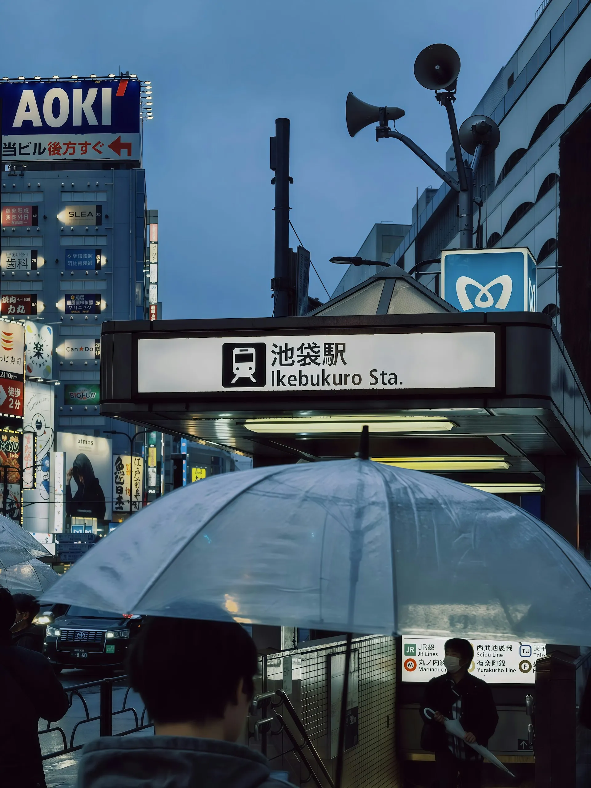
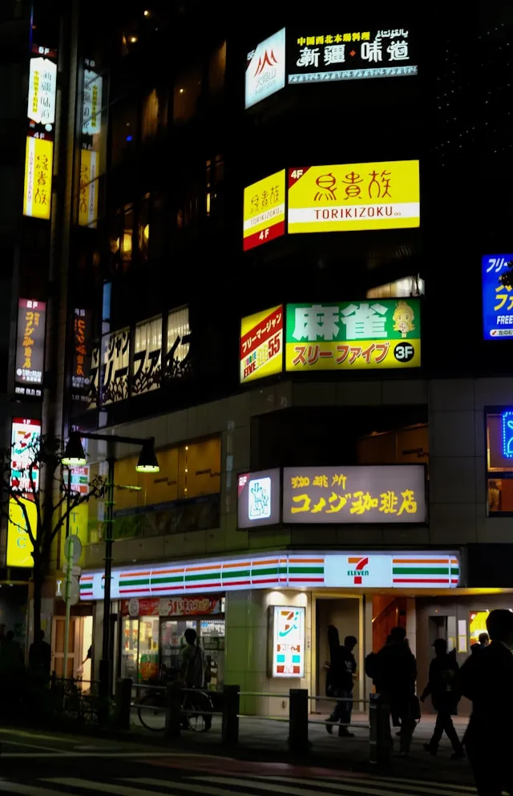
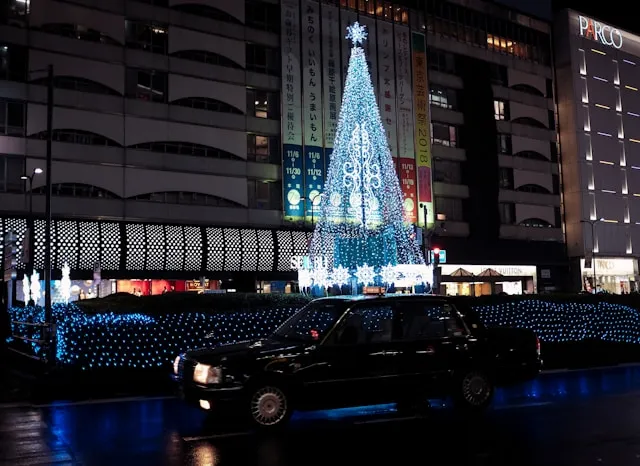
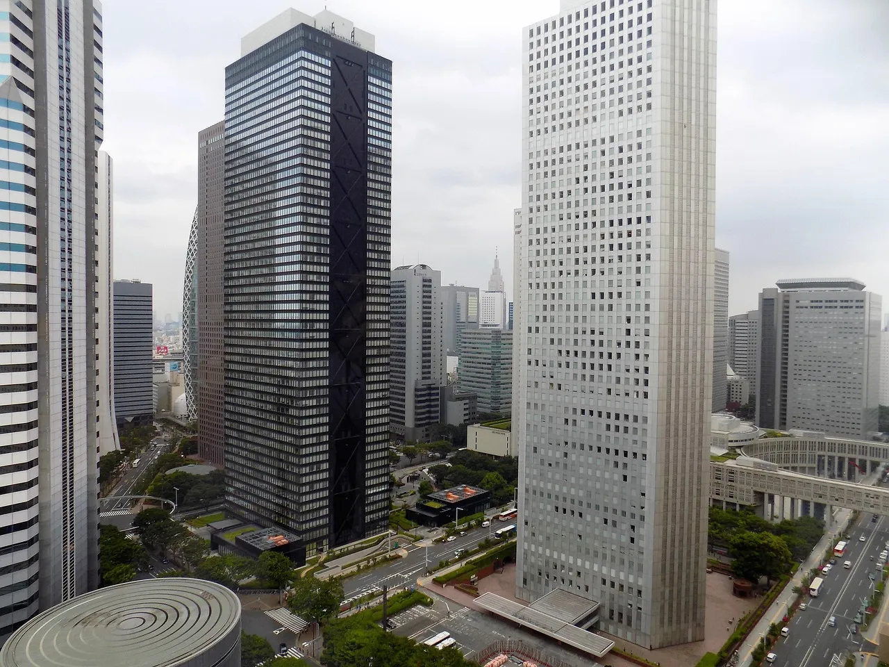
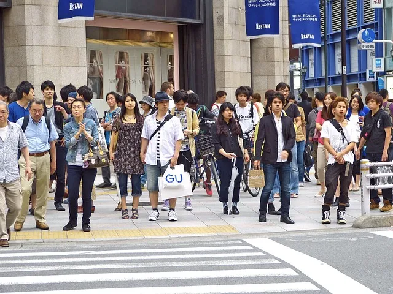
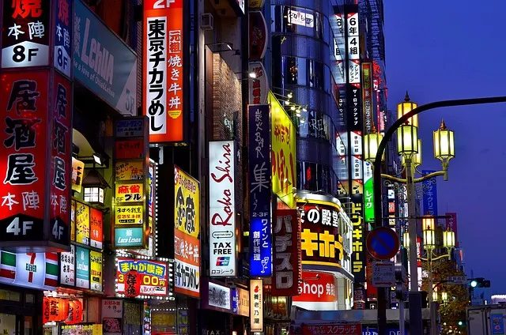
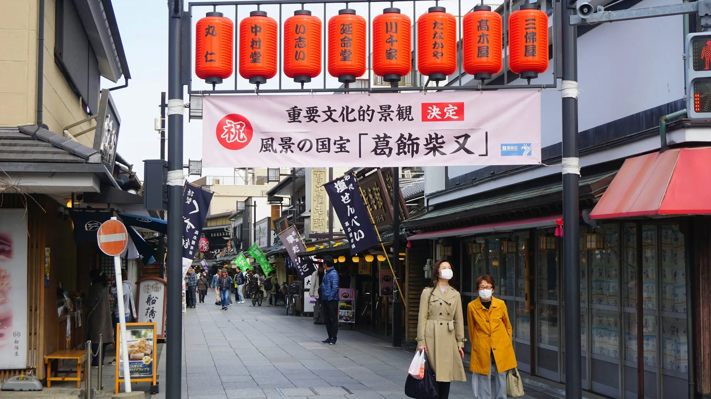
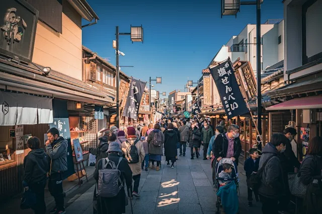

対比で魅せる 多層都市・東京
雨上がりのネオン、高層ビルの鼓動、昭和の残り香。映像とスプリットレイアウトが描く、あなたの知らない東京。

池袋駅周辺は、サブカルチャーとエンターテインメントが交差する街。アニメショップ、ゲームセンター、そして活気あふれる商店街。雨上がりのネオンが、この街の多面顔を魅力的に照らし出します。



新宿は、世界一の乗降客数を誇る駅を中心に、高層ビル群と広大な歌舞伎町が共存する巨大都市。ビジネスの鼓動と、夜の華やかさが織りなすエネルギーは、訪れる人々を圧倒します。



柴又帝釈天の参道は、映画『男はつらいよ』の世界観がそのまま残る、昭和レトロな街並み。草団子や川魚料理、そして渡し舟。都心とは対照的な、心温まる下町の情緒に包まれます。
